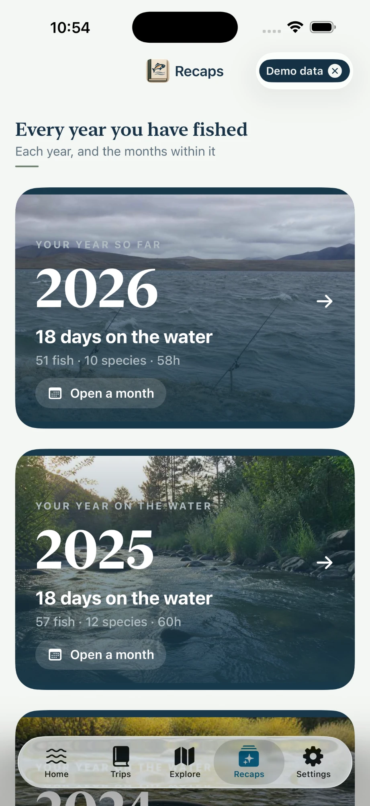

You only write a trip down once. The same day turns up again in your calendar, your catches and species, your waters, the recap for that month and that year, and the photo book you make at the end of the season.
Every year you fish gets its own page. The current one fills in as you go.